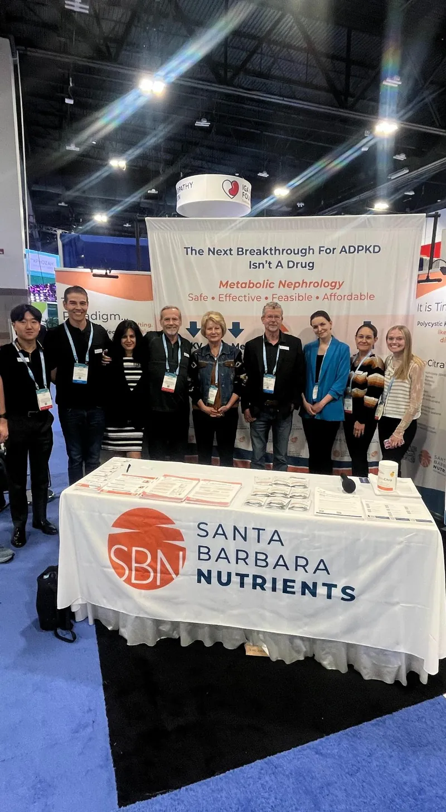
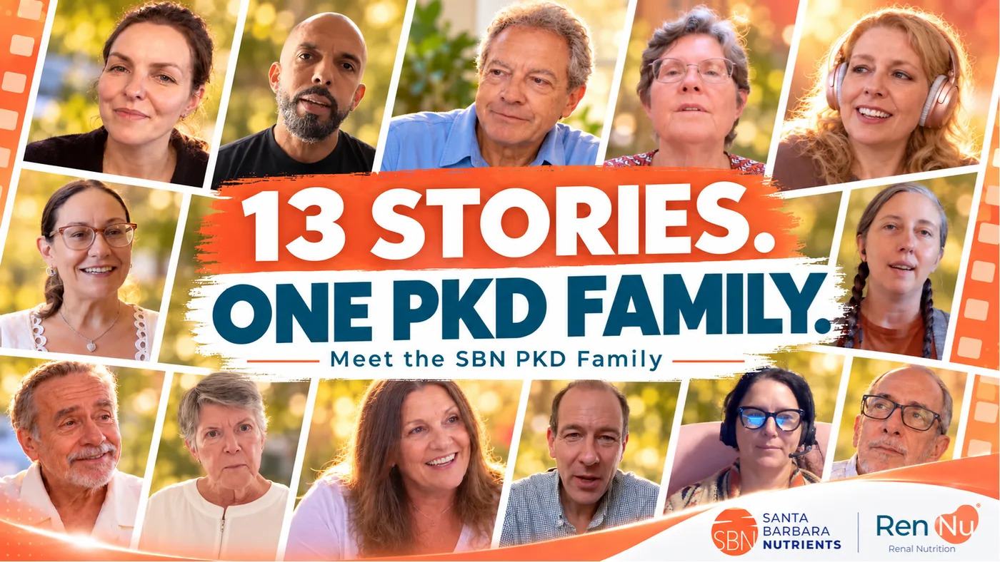

Melina Messing, PhD
Wissenschaftliche Leitung, Ren-Nu
Postdoctoral Researcher an der University of California, Santa Barbara
Wissenschaft und eigene PKD-Betroffenheit
Wer an einer chronischen Nierenerkrankung leidet, wünscht sich nach der Diagnose oft mehr Orientierung. Deshalb haben sich Wissenschaftlerinnen und Wissenschaftler, Klinikerinnen und Kliniker, Ernährungsexpertinnen und -experten sowie Betroffene zusammengetan, um die Ernährungsunterstützung zu schaffen, die ihnen fehlte. Gestützt auf Forschung, klinische Erfahrung und gelebte Erfahrung hilft Ihnen unser Programm, die Nierengesundheit aktiv in die Hand zu nehmen – mit jeder alltäglichen Entscheidung.

Bei Ren-Nu™, einem Teil von Santa Barbara Nutrients (SBN), ist es unsere Mission, die Nierengesundheit zu verbessern und das Leben von Menschen mit Nierenerkrankungen zu erleichtern. Auf Grundlage modernster Forschung und innovativen Denkens arbeitet unser Team aus Nierenforschenden, Ernährungsfachkräften und Fürsprechenden gemeinsam an alltagstauglichen Lösungen.
SBN wurde von führenden Nierenforschenden der University of California, Santa Barbara, als Benefit Corporation gegründet. Viele Teammitglieder sind selbst von einer Nierenerkrankung betroffen.
Mit persönlich zugeschnittenen Ernährungs- und Lebensstilprogrammen für die Niere befähigen wir Menschen, aktiv etwas gegen ihre Nierenerkrankung zu tun und ein gesünderes, erfüllteres Leben zu führen. Unser Engagement geht über klinische Lösungen hinaus – wir sind den Gemeinschaften, denen wir dienen, eng verbunden und bieten Aufklärung, Unterstützung und praktische Werkzeuge für langfristige Gesundheit.

Das Ren-Nu-Team ist mehr als Wissenschaft – wir sind eine vielfältige Gruppe aus Expertinnen und Experten, Fürsprechenden und engagierten Menschen, die das Programm mit Leben füllen. Von Forschenden und Fachkräften für Nierenernährung bis zu denjenigen, die im Hintergrund arbeiten, verbindet uns eine Mission: Sie auf Ihrem Weg zu besserer Nierengesundheit zu unterstützen. Gemeinsam sorgen wir dafür, dass Sie die Begleitung und die Ressourcen erhalten, die Sie brauchen, um aufzublühen.
Wissenschaftliche Leitung, Ren-Nu
Postdoctoral Researcher an der University of California, Santa Barbara
Wissenschaft und eigene PKD-Betroffenheit

Medizinische Leitung, Ren-Nu
Board-zertifizierte Nephrologie mit Schwerpunkt autosomal-dominante polyzystische Nierenerkrankung (ADPKD)

Leitung Ernährung, Ren-Nu
Staatlich anerkannte Ernährungsfachkraft (Registered Dietitian Nutritionist)
Jahrzehntelange Erfahrung in der Nierenernährung

Leitung Produktion und Produktentwicklung bei Santa Barbara Nutrients
Master of Science in Humanernährung

Clinical Research Manager bei Santa Barbara Nutrients
Bachelor of Science in Public Health

President & Chief Scientific Officer bei Santa Barbara Nutrients
Professur für Molekular-, Zell- und Entwicklungsbiologie an der University of California, Santa Barbara
Gründung · weltweit unter den führenden PKD-Forschenden

Research Scientist bei Santa Barbara Nutrients
Associate Project Scientist an der University of California, Santa Barbara

Programmadministration, Ren-Nu-Programm
Bachelor of Arts in Volkswirtschaftslehre

Forschungs-Ernährungsfachkraft
Staatlich anerkannte Ernährungsfachkraft, Promotionsstudium an der Juntendo-Universität

Ren-Nu-Ernährungsfachkraft (Registered Dietitian Nutritionist)
Gesundheitscoach
Subscribe to our newsletter to stay informed about the Ren-Nu Program and get all the latest updates and announcements.